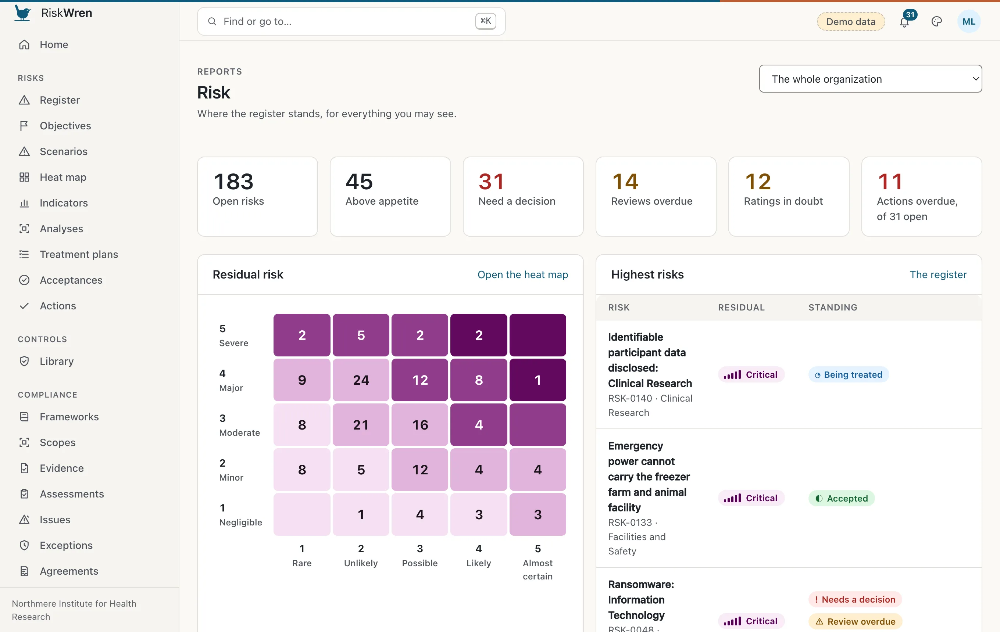
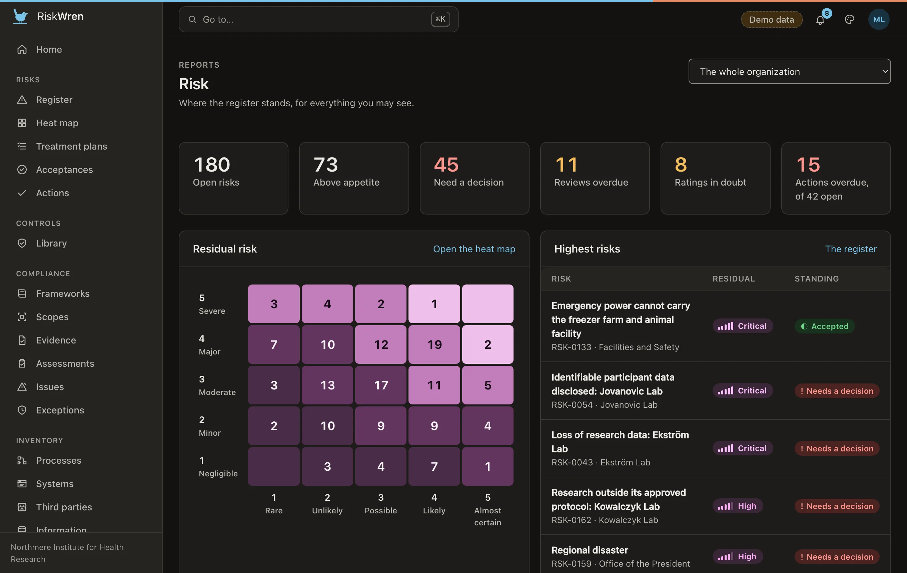
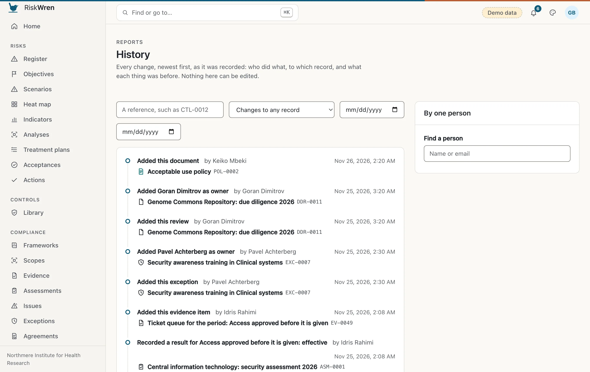
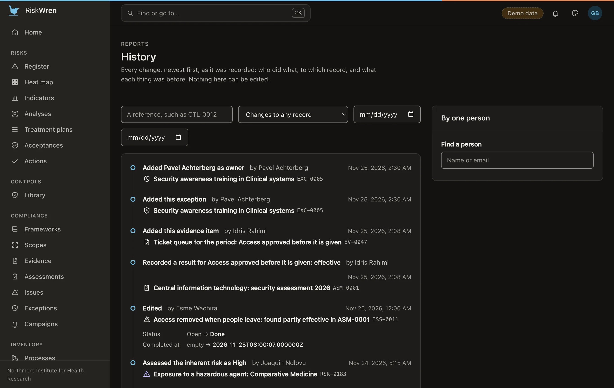

Running the program
This guide is for the risk, compliance, and security assurance team and for administrators. It covers roles and scope, who sees what, shaping the program, the dashboards, the history, and appearance.
Two kinds of authority#
RiskWren keeps administration and judgment apart.
- An administrator manages accounts, units, appearance, and system settings. That role reads the register and can set the program's rules, since it sets everything else up. It does not assess, rate, or accept.
- A manager runs the program: shapes the categories, appetite, and scoring method, edits any record, and reads everything. A manager does not accept risk either. Acceptance belongs to leaders.
Someone who does both jobs holds both roles, and the history shows which they acted under.
Roles and scope#
Four roles can be limited to a unit, and then cover that unit and everything beneath it: manager, assessor, leader, and steward. A manager or assessor with no unit covers the whole organization, and only a manager for the whole organization shapes the program.
| Capability | Member | Owner | Steward | Leader | Assessor | Manager | Auditor | Admin |
|---|---|---|---|---|---|---|---|---|
| See what is assigned to them; finish their actions | ✓ | ✓ | ✓ | ✓ | ✓ | ✓ | ✓ | ✓ |
| Read the inventory | ✓ | ✓ | ✓ | ✓ | ✓ | ✓ | ✓ | ✓ |
| Read risks and controls | by setting | ✓ | in scope | in scope | in scope | ✓ | ✓ | ✓ |
| Add a record to a unit | ✓ | ✓ | ||||||
| Edit a record; link and unlink | ✓ | ✓ | ✓ | |||||
| Assess a risk; rate a control | ✓ | ✓ | ✓ | ✓ | ||||
| Record a response; run a treatment plan | ✓ | ✓ | ✓ | |||||
| Accept a risk | ✓ not their own, up to their limit | |||||||
| Escalate a risk | ✓ | ✓ | ✓ | ✓ | ||||
| Map a control to requirements | ✓ | ✓ | ✓ | |||||
| Add a scope; say what applies in it and how each control is done there | ✓ | ✓ | ✓ | |||||
| Add evidence for a unit they work in | ✓ | ✓ | ✓ | ✓ | ✓ | ✓ | ||
| Attach evidence to a control or a scope | ✓ | ✓ | ✓ | ✓ | ||||
| Start an assessment; plan its tests | ✓ | ✓ | ||||||
| Record a test result, or confirm one | ✓ not their own control or result | ✓ not their own control or result | ||||||
| Raise an issue for a unit they work in | ✓ | ✓ | ✓ | ✓ | ✓ | ✓ | ||
| Work on an issue: actions, its date, proposing closure | ✓ | ✓ | ✓ | |||||
| Confirm an issue's closure; withdraw or reopen one | ✓ not their own | ✓ not their own | ||||||
| Ask for an exception | ✓ of the scope or control | ✓ | ✓ | |||||
| Decide an exception | ✓ not their own request | ✓ not their own request | ||||||
| Export a list they can see | ✓ | ✓ | ✓ | ✓ | ✓ | ✓ | ✓ | ✓ |
| Import records from a spreadsheet | ✓ | ✓ | ||||||
| Read the full history | ✓ | ✓ | ✓ | |||||
| Shape the program; keep the organization's own frameworks | ✓ | ✓ | ||||||
| Manage accounts, units, and appearance | ✓ |
Roles are given under Admin → People, or with riskwren users roles. The last active administrator can never be removed or disabled.
Who sees what#
The inventory is open. Processes, systems, third parties, and information assets are visible to everyone signed in, because a record can only be linked to what its author can see. So are frameworks and their requirements.
The register follows a setting. A register of risks and controls is useful in proportion to how widely it is read, and sensitive in proportion to how widely it is exposed. Admin → Program → Who sees the register sets what a person with no role sees:
| Setting | A member sees |
|---|---|
| Open | Every risk and control that is not restricted |
| Unit (the default) | The risks and controls of the units they belong to, and any they are named on |
| Assigned | Only the risks and controls they are named on |
Whatever the setting, leaders and stewards see their unit and everything beneath it, and managers, assessors, auditors, and administrators see what their role covers.
Any record can be marked restricted. It is then seen only by its owners, its unit's steward and leaders, managers, and auditors.
Evidence, issues, and exceptions are more closely held. Each is known to whoever made it, those named on it, and those with a role over its unit. Working in the unit is not enough.
- Evidence is also seen through something it is attached to that the person may see, unless it is restricted or of the most sensitive data class.
- An issue is also seen by anyone with an action on it.
- A control that a scope inherits is shown there by name and state to those who keep the scope, whoever may open the control itself.
One rule decides what a person may see, and every list, count, chart, and search uses it. A figure on the dashboard never counts a record its reader could not open.
One consequence is worth knowing. Under the default setting a steward cannot link their risk to a control that another unit runs, because they cannot see it. Controls that one unit runs for everyone, such as backups or training, are linked to other units' risks by a manager.
Shape the program#
Admin → Program shows how risks are rated here, in full: the categories and their appetite, the matrix, what follows from each rating, and the written definition of every level. Anyone assessing a risk sees the same definitions as they choose.


Appetite#
Appetite is the highest residual rating the organization will live with for a kind of risk without a plan or an acceptance. It is set for each of the nine top categories and can be set differently for any category beneath; one that sets none takes its parent's.
As shipped, clinical, regulatory, and financial risk have a low appetite, strategic risk a high one, and the rest moderate. Change any of them on the Program page. The page says at once how many risks changed standing, and the change is recorded in the history.
Who may accept what#
The table on the Program page shows, for each rating, how often a risk is reviewed and who may accept it when it is above appetite:
| Residual rating | Reviewed every | May be accepted |
|---|---|---|
| Low | 24 months | No acceptance is needed |
| Moderate | 12 months | For up to 24 months, by a leader of the unit or above |
| High | 6 months | For up to 12 months, by a leader whose limit reaches high |
| Critical | 3 months | For up to 6 months, by a leader whose limit reaches critical |
A leader's limit is set with the role. A sensible start: unit leaders at moderate, division leaders at high, and one or two executives at critical.
Clocks for issues and exceptions#
Two more rules are part of the program:
| Rule | As shipped |
|---|---|
| How long after it is raised an issue is due, by severity | Critical 30 days, high 90, moderate 180, low 365 |
| The longest an exception may run | 12 months |
| How long a control's rating, a test result, and evidence hold | 12 months |
They are in the program pack under cadences, as issue_due_days, exception_max_months, and control_rating_months. The meanings of the four severities, the root causes an issue is closed with, what can find an issue, and the other systems a record can be known in (each with an optional address pattern, so that an identifier becomes a link) are vocabularies in the same pack.
Change the program with a pack#
The scoring method, cadences, the acceptance table, and the vocabularies (kinds of system, data classes, owner kinds, and so on) are held as one document, a program pack.
uv run riskwren program export --output program.json # write the one in force
uv run riskwren program import program.json --dry-run # check an edited one
uv run riskwren program import program.json # load itAn import checks the whole pack first and reports every problem together. A scoring method in which a rating falls as likelihood or impact rises is refused. A changed method becomes a new version: assessments already made keep the version they were made under, so an old rating always means what it meant.
A pack is also how one installation's program is copied to another, and how a program is kept under version control.
Read the dashboards#
There are two, each for the whole organization or for one unit and everything beneath it. Reports → Compliance shows how ready each scope is against what it is held to and what stands in the way; it is described in The compliance dashboard. Reports → Risk shows where the register stands:
| Figure | Counts |
|---|---|
| Open risks | Risks that are not closed |
| Above appetite | Open risks whose residual rating exceeds the appetite for their category |
| Need a decision | Those above appetite with neither a plan on time nor an acceptance in force |
| Reviews overdue | Open risks past their next review date |
| Ratings in doubt | Risks flagged because what is known about their controls got worse |
| Actions overdue | Open actions past their due date |
Below them are the residual matrix, the highest risks, the register by standing, by rating, by category, and by unit, and what is known about the controls: how many are effective, partly effective, not assessed, or rated too long ago to rely on.




On both, every figure is the count of a list, and opens that list with the same filters. A dashboard has no numbers of its own, so a figure and the records behind it cannot disagree.
Until scheduled jobs arrive in a later release, the calendar is caught up when the register is read: the first person to open it after an acceptance expires or a plan runs late causes the standing to be updated, and the history records that as done by the system.
The history#
Every change to every record is written to an append-only history in the same transaction as the change: who, when, and each value before and after. Each event is hashed together with the one before it, and the database itself refuses updates and deletes on the history.
- Each record's History tab shows its own events in plain words.
- Reports → History shows every change in one place, for managers, auditors, and administrators: narrowed to a person, a record, a kind of record, or a span of dates. It opens on changes to records; sign-ins, exports, and settings are one choice away.
- Reading is recorded where it matters: every download of an evidence file and every export of a list is an event, with who and what.
uv run riskwren verifyrecomputes the chain and reports the first event that has been altered, removed, or cut from the end.uv run riskwren doctorchecks that the database still refuses changes to the history.




Assessments, control ratings, test results, and acceptances are never edited. A new one supersedes the last, and all of them are kept.
Appearance#
Admin → Appearance makes the product yours, with a live preview:
- the product's name and your organization's name;
- a logo for light and for dark mode, and a tab icon;
- the default palette (Wren, Slate, or Garnet) and an accent color, which is adjusted for dark mode and refused if text on it could not be read;
- how ratings are colored: an ordinal ramp from light to dark in one hue, which keeps rating apart from the colors of standing, or a signal ramp from green to red.
Each person chooses light, dark, or system mode and a palette for themselves, from the appearance button at the top right.


Back up and recover#
- Back up the data home, and the database as well if you use PostgreSQL. Evidence files are in the data home under
files/, and the database refers to them. uv run riskwren program exportkeeps a copy of the program you have shaped.- If nobody can sign in,
riskwren usersadds an administrator or resets a password from the server's own command line. Changes made there are recorded in the history as made at the command line.